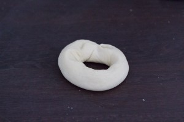
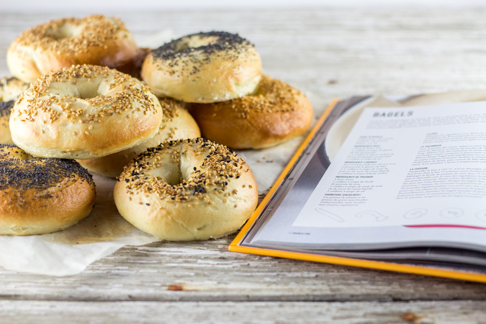
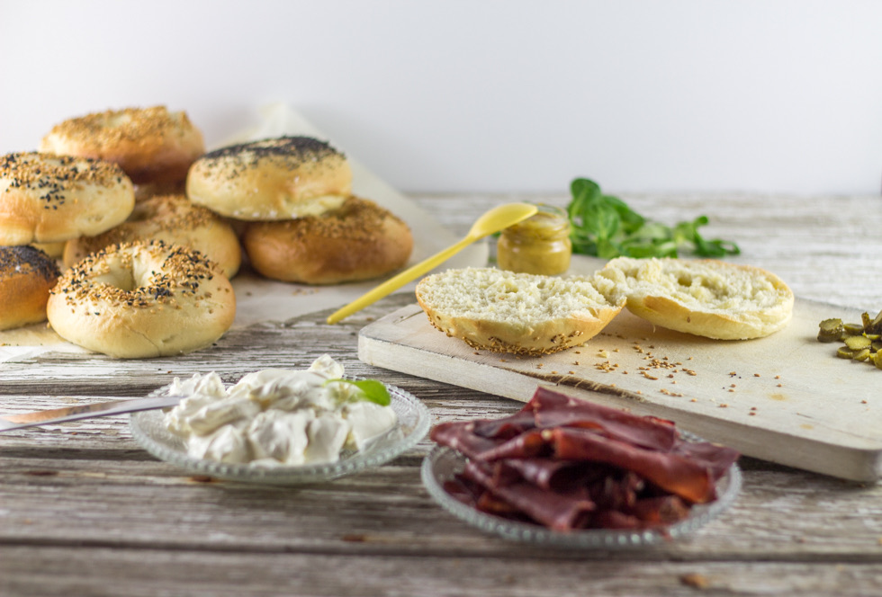
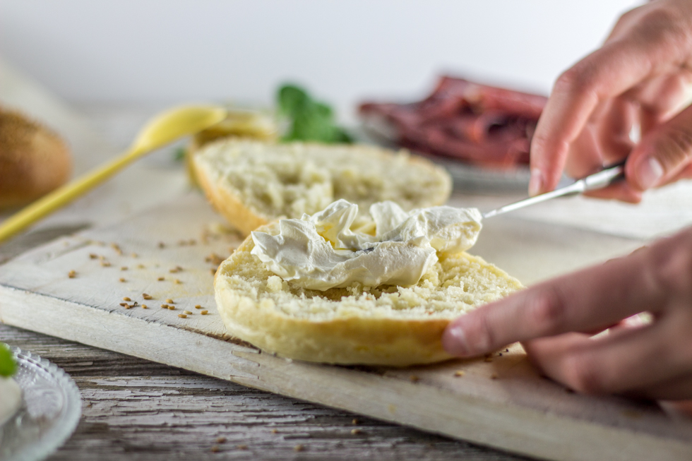
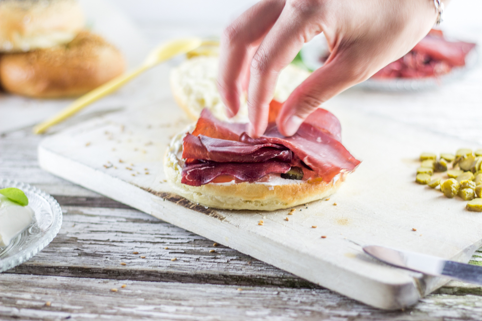

Bagels maison

Je ne pouvais pas attendre plus longtemps pour partager avec vous cette recette de bagels maison (qui sont bien meilleurs que tous ceux que j’ai pu acheter).
Il y a peu de temps, les bagels n’étaient pas encore très connus en France mais petit à petit ils commencent à se faire une vraie place et moi je dis oui (oui oui oui!!!!)! Vous savez, les bagels sont ces petits pains ronds avec un trou au milieu. En France, on vous expliquera que s’il y a trou c’est pour qu’il y ait moins de pain et que donc les bagels seraient plus « healthy » que les autres pains à sandwich mais il n’en est rien!! En réalité, l’origine du bagel remonterait au 17ème siècle. Ils furent créés par un boulanger polonais voulant remercier le roi polonais d’avoir protégé les juifs contre l’invasion des turcs. Le roi polonais étant un très bon cavalier, le boulanger lui fit cadeau de ce pain représentant un étrier (bugel signifiant « étrier »). Plus tard, les juifs importèrent les bagels en Amérique et la suite vous la connaissez tout autant que moi… J’ai déjà acheté des bagels que l’on trouve dans le commerce et honnêtement ça ne ressemble en rien au vrai bon bagel que j’ai déjà pu manger. Le pain des bagels est très élastique, très dense et contrairement à un pain plus classique il faudra lui faire prendre un bon bain avant de le cuire définitivement au four. J’ai cherché pendant longtemps « la » bonne recette de bagels et je pense en avoir trouvé une plutôt pas mal! Vu que je n’avais pas été déçue de la recette d’hamburgers de Marc Grossman je me suis dit pourquoi ne pas tenter ses bagels? J’ai quand même modifié deux trois éléments de la recette originale et je suis ravie du résultat alors si l’envie de faire vos bagels maison vous prend, voici la recette!
En plus de partager avec vous cette recette de bagels maison, je vous propose de les garnir de cream cheese, de viande de grison et de cornichons avec une bonne sauce moutarde-miel. Enjoy!!!
Ingrédients
- Farine T55 - 750g
- Levure de boulanger instantanée - 1 sachet
- Sel - 1 càs
- Eau tiède - 380 ml
- Miel - 2,5 càs
- Huile d'olive - 2 càs
- Graines de sésame, pavot...
- Eau - 3 litres
- Maïzena - 1 càs
- Miel - 1 càs
- Sel - 2 càs
- Viande de grison
- Cornichon
- cream cheese (philadelphia, St Moret)
- Moutarde
- Miel
Instructions
- Mélanger dans le bol de votre robot (ou dans un grand saladier) la farine, la levure et le sel. Réserver
- Dans un autre récipient, mélanger l'eau, le miel et l'huile d'olive
- Verser cette préparation dans le mélange farine-levure-sel
- Pétrir pendant 10-15 minutes jusqu'à obtention d'une pâte lisse et élastique
- Peser la pâte et divisez-la en 10 portions égales et former des boules
- Étirer les boules de manière à former un boudin d'environ 20cm de long
- Aplatir l'une des extrémités
- Envelopper les deux extrémités l'une dans l'autre en mettant l'extrémité "arrondie" dans l'extrémité plate
- Sceller bien la fermeture
- Déposer les bagels sur un plaque de cuisson recouverte de papier sulfurisé
- Saupoudrer de farine et couvrir de film alimentaire
- Laisser lever pendant 1h à température ambiante
- Préchauffer le four à 225°
- Dans un bol, mélanger la maïzena avec 250 ml d'eau froide puis la dissoudre avec le reste des ingrédients de pochage dans un grand faitout
- Porter à ébullition et baisser ensuite pour que l'eau frémisse
- Plonger les bagels dans l'eau (moi je le fais 3 par 3)
- Au bout d'1 minutes, retournez-les et poursuivez la cuisson pendant 30 secondes supplémentaires
- Les sortir de l'eau avec un écumoire et posez-les sur une plaque de cuisson recouverte de papier sulfurisé
- Vous pouvez parsemer les bagels humides de sésame ou de pavot ou autre garniture à ce moment là
- Enfourner et baisser la température du four à 210°
- Cuire pendant 20 minutes jusqu'à ce qu'ils soient bien dorés
- Vous pouvez maintenant les garnir de ce que vous voulez ou bien les congeler
- Couper les bagels en deux (vous pouvez le faire griller si vous le souhaitez mais s'ils sont frais ce n'est pas nécessaire)
- Tartiner de cream cheese le bas du bagel (et le haut si vous voulez^^)
- Ajouter des morceaux de cornichons couper en petites rondelles
- Poser quelques tranches de viande séchée (le mieux c'est si vous trouvez du pastrami!!!!)
- Arroser de moutarde au miel Pour la moutarde au miel, mélanger 3 càs de moutarde et 2 càs de miel
- Refermer le bagel et déguster!!





Les tips de la communauté
Succès manifeste. Recette parfaite qu'on peut adapter facilement. Testée plusieurs fois avec succès. Bagels excellents, bien meilleurs que ceux du commerce. Simple à suivre et résultat fiable.
Astuces
- Recette simple et rapide à suivre même pour débutants
- Congeler en grande quantité dans des sacs congélation - se conservent très bien
- Technique traditionnelle : faire trou au centre, allonger en tournant autour de la main
- Ne pas badigeonner avec jaune d'oeuf - vraie recette sans
- Ajouter miel/huile d'olive essentiels pour le goût et texture
- Techniques variées de glaçage possible (sésame, pavot, piment d'Espelette-gruyère)
Variantes suggérées
- Essayer le sésame, pavot, piment d'Espelette + gruyère comme glaçage
- Remplir avec saumon fumé + crème cheese + coriandre fraîche
- Utiliser avec viande des Grisons à la place du smoked meat québécois
- Garniture chèvre frais + bresaola
- Farcir avec crème cheese Philadelphia classique
Ajustements signalés
- La maïzena ne peut pas être remplacée par farine (trop lourd)
- Possible de remplacer farine blanche par farine aux céréales (non testé)
- Un sachet de 8g de levure suffit
- Conserver 1-2 jours en boîte maximum, sinon congeler